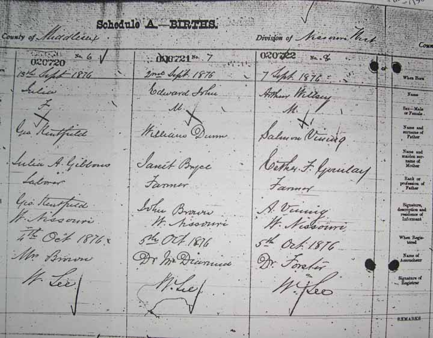
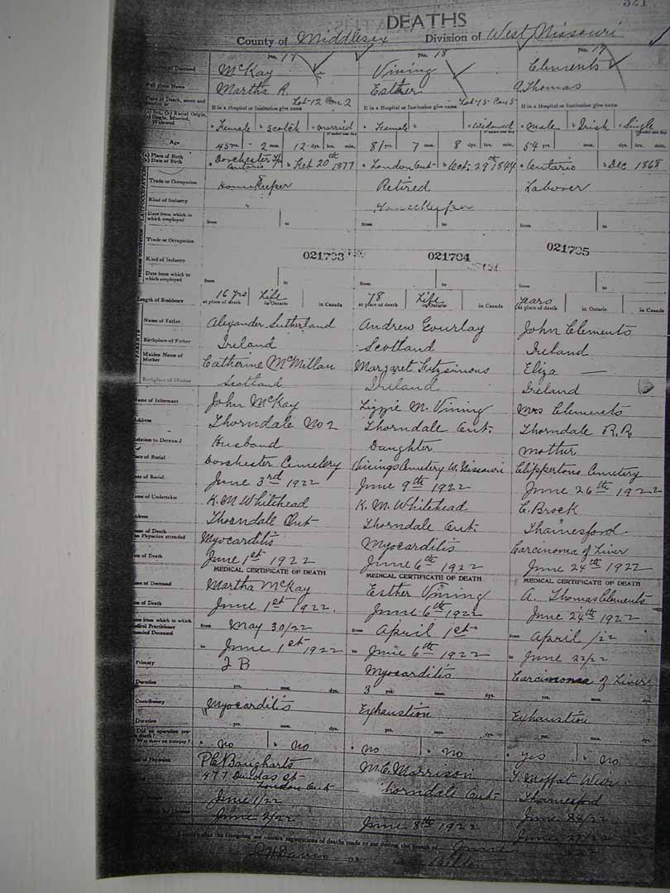

Birth Data
Birth certificate (right hand column) for Arthur Wellesley Vining, son of Salmon Vining Jr. and Esther F. Gourlay:
Census Data
| 1870 | 1880 | 1881 | 1890 | 1900 | 1910 | 1920 | |
| Salmon Vining Jr. | ? | ? | 44 | ? | ? | ? | dead |
| Esther F. (Gourlay) Vining | ? | ? | 40 | ? | ? | ? | ? |
| Andrew Joseph Vining | ? | ? | 18 | ? | married and living in separate household | ||
| Anna Margaret Vining | ? | ? | 16 | ? | married and living in separate household | ||
| Lizzie Maria Vining | ? | ? | 14 | ? | ? | ? | ? |
| William Carey Vining | ? | ? | 12 | ? | ? | married and living in separate household | |
| Ebenezer Vining | ? | 10 | ? | ? | ? | ? | |
| Mary Esther Vining | ? | 7 | ? | ? | ? | ? | |
| Arthur Wellesley Vining | ? | 4 | ? | ? | ? | ? | |
| Albert George Vining | ? | <1 | ? | ? | ? | ? | |
| Glidden Bodwell Vining | ? | ? | ? | ? |
Death Data
Death certificate (center column) for Esther F. (Gourlay) Vining: